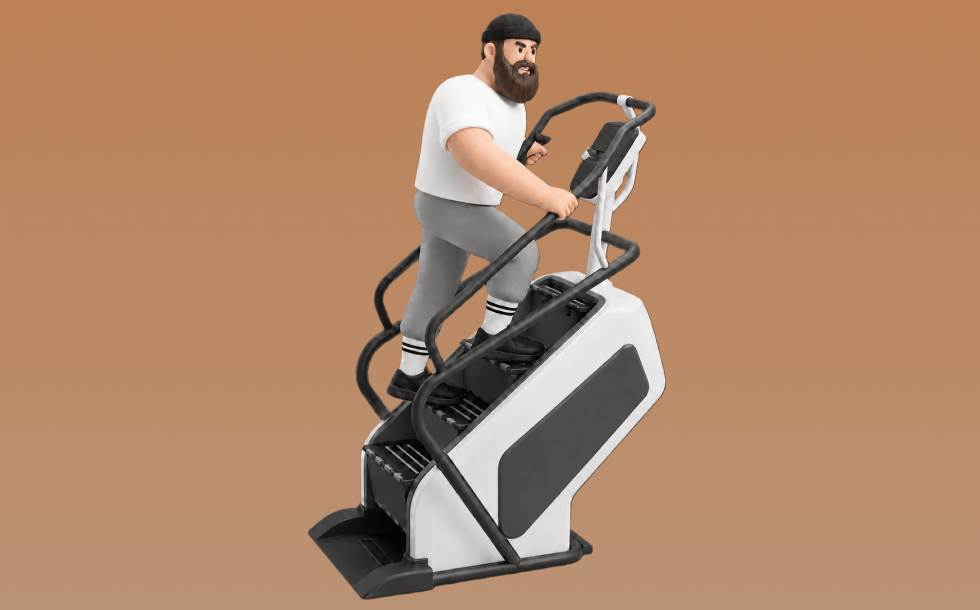

クライムミル

クライムミルとは、マシンを使って「階段を登る」動作を行い、主に下半身と心肺機能を鍛える有酸素トレーニングです。高い運動強度になりやすいのが特徴で、一定テンポで踏み上がる動作を繰り返します。これにより、脂肪燃焼や心肺機能向上が期待できます。
- 対象部位
- 有酸素
- 器具
- マシン
- 記録形式
- 時間
- 別名
- ステアクライマー / クライムミル / 階段マシン / stair climber / climbmill / stair machine / stairmaster
YouTube動画
YouTubeショート
-
クライムミル shorts #メガフィット東習志野店 #有酸素運動
-
お尻パンッパンになるアブダクション追い込み法🍑 #筋トレ女子
-
有酸素運動やりすぎると体脂肪燃えない?!【山本義徳切り抜き公式】#shorts
-
誕生日でも爆走するカズハ#shorts #lesserafim #kazuha #カズハ #有酸素運動 #ランニングマシン #ウォーキング #お腹痩せ #韓国ダイエット #韓国美容 #ダイエット
-
登山のトレーニングはしていますか？ #登山初心者 #山旅質問
-
【最速で脂肪を燃やす】最もカロリー消費の高い自重トレ種目ベスト3 #筋トレダイエット #脂肪燃焼 #自重トレーニング
-
トレッドミルの傾斜のおすすめは？？#薬学生 #筋トレ #shorts #ダイエット
-
24Hジムで1度は見たことある光景TOP20 第19位
-
【ジムあるある】初心者編TOP4#ジムあるある# #ダイエット女子 #ジム女子#フィットネス女子#初心者#ジム初心者#筋トレ女子
-
【絶対ダメ】パーソナルジムで絶対にやらないで欲しいこと。
-
【トレーニング】筋トレ ダイエット ジム フィットネス MND-X200クライムミル(1) 大阪 東京
-
減量中の有酸素運動の落とし穴 #shorts
-
【忙しい人向け】1日30分で鬼の背中を作るトレーニング#shorts #youtubeshorts ##筋トレ大学#ダイエット#筋トレ
-
ステッパーを1ヶ月使った結果… #ステッパー #ステッパーダイエット #ステッパー隊 #東急スポーツオアシス
-
【筋トレあるある】筋トレ歴別ジムファッションの違い#筋トレ #筋肉#筋肉あるある
-
正しい懸垂のやり方 #shorts【ビーレジェンド プロテイン】
-
ステアマスターの正しい乗り方！！!
-
いや、これだけ前腕太かったら絶対舐められないでしょ！#shorts
-
有酸素におすすめの傾斜は15° #shorts
-
筋トレあるある「脚トレの日の朝によく見る走馬灯」#shorts
-
絶対買うべき筋トレ器具 #筋トレ #ホームトレーニング #トレーニング #筋肉 #ホームトレーニー #ボディビル #フィジーク
-
有酸素したら筋肉落ちるって言ってくる奴 #shorts
-
How to do "the Mill" with Heavy clubs #training #heavyclubs #fitness #health
-
ステッパーの効果を最大化する方法＃宅トレ#宅トレダイエット#ルネサンス#ステッパー#ダイエット#シェイプ#下半身痩せ#お腹痩せ#pr
-
ジム行っても顔痩せしなかったから1ヶ月舌回しした結果… #口呼吸 #舌回し
-
Deadlift form check! 🏋️♀️ #shorts
-
オススメしないシューズ。なぜならトレーニングが必要だから。#vivibarefoot #barefoot #shoes #barefootshoes #yusukeokawa #大川優介
-
Why Do Some #Criminals #Pay #Income #Tax To The #IRS? #attorney #lawyer #taxes #crime #America
-
下山が遅い人！そのままで本当に良いの？？
-
Understanding of Form No 16 | ITR 2023
動作方法
- ウォームアップで心拍を段階的に上げる
- 目的に合わせてペースを設定する
- 終了後はクールダウンで整える
動作ポイント
- 呼吸を止めない
- 開始直後に追い込みすぎない
ワンポイントアドバイス
- 体調に合わせて時間や強度を調整する
- ペースより継続を優先する
目的別回数設定
目的や体力に応じた一般的な目安です。無理のない範囲で調整してください。
- 筋力アップ
- 高強度 20〜60秒
- 筋肥大
- 中強度 10〜20分
- 持久力アップ
- 低〜中強度 20〜60分
YouTube動画について
動画はYouTubeの公開情報をもとに表示しています。内容は投稿者によるもので、Biggrによる監修ではありません。
アプリを入手
筋トレやトレーニングの記録はBiggrにお任せください。今すぐ無料で使い始められます。